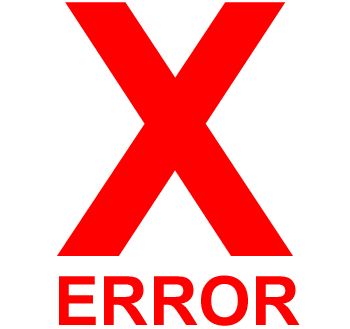
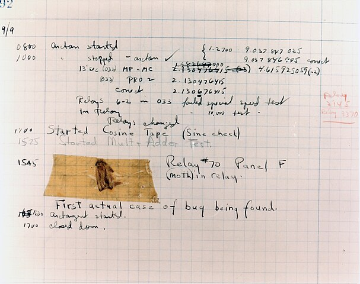
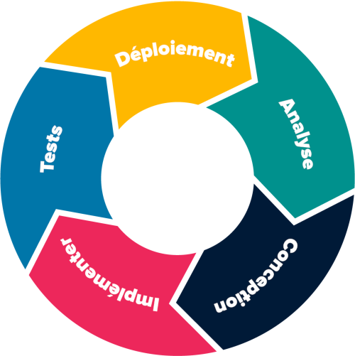

C2-STRAT-02 : Gestion des erreurs
Contents

C2-STRAT-02 : Gestion des erreurs#
Objectifs pédagogiques#
Connaître la définition d’une erreur
Savoir identifier le type d’une erreur :
algorithmique
erreur de programmation
syntaxique
Connaître les conséquences de certaines erreurs algorithmiques ou de programmation dans l’histoire de l’informatique
Qu’est-ce qu’une erreur (un bug) ?#
Un bug est un défaut ou un problème dans un code informatique. Sa nature peut-être de cause variée.
Historique#
Le tout premier bug de l’histoire de l’informatique, c’est-à-dire identifié dans un ordinateur a été signalé le 9 septembre 1947 dans l’un des tout premiers calculateurs universels (ordinateur) du monde : le Harvard Mark 1 installé à l’université de Harvard aux Etats-Unis.

Cet ordinateur ne fonctionnait pas avec des transistors et circuits électroniques modernes, mais avec des relais téléphoniques, des interrupteurs, des arbres mécaniques et des embrayages. Tous ces éléments étaient sensibles à des éléments matériels physiques. Ce fut le cas d’un insecte qui se logea dans l’une des parties mécaniques et mis l’ordinateur en erreur. En anglais, un insecte se dit bug. Le mot est resté jusqu’à aujourd’hui.
Causes#
Les causes d’un bug sont variées : algorithmique, programmatique ou syntaxique. Parfois le bug résulte de la conception même de la machine : ce sont les bugs matériels.
Savoir les reconnaître#
Tout l’art de l’informaticien est de :
savoir les reconnaître
les prendre en compte dans le design de son programme
Partie intégrante du cycle de développement logiciel#

La phase de tests du logiciel (du programme) est celle qui comporte le traitement des erreurs.
“Traiter une exception”#
Dans certains languages de programmation - c’est le cas de Python - une erreur est appellée exception et le programmeur peut la prendre en compte dans l’écriture de son programme : il anticipe qu’elle va arriver. C’est ce que l’on appelle traiter une exception.

Lever une exception se fait par la construction try… except NomDeLException. Par exemple :
nombre = input("Entrez un nombre : ")
try:
nombre = int(nombre)
except ValueError:
print("Désolé la valeur saisie n'est pas un nombre.")
“Lever une exception”#
Dans certains languages - c’est le cas de Python - à la place de traiter une exception (ou de la jeter), on peut la lever. Lorsqu’une erreur est levée, alors le programme s’arrête. Cela se fait par le mot-clef raise
x = -1
if x < 0:
raise Exception("Désolé, le nombre doit être supérieur à zéro")
Définition : erreur algorithmique#
Une erreur algorithmique est l’une des plus complexes à reconnaître.
Complexité inadéquate#
Si pour un problème donné, on part aveuglement sur un algorithme de complexité supérieure à la complexité idéale (par exemple: un \(\mathcal O (N^3)\) alors qu’il existe du \(\mathcal O (N^2)\) pour résoudre le même problème).
Algorithme inadapté#
Un algorithme qui ne répond pas complètement ou totalement au problème qu’il est sensé résoudre…
Boucle infinie#
Une boucle infinie dans un algorithme (ce qui signifie de facto que l’algorithme n’en est pas un)
Ce problème peut être observé dans un algorigramme

Définition : erreur de programmation#
Ce qui est compris dans une erreur de programmation est une erreur qui existe avec un programme qui fonctionne mais qui crash pour une raison programmatique.
division par 0#
Le programme suivant fonctionne pour autant que la valeur entrée ne soit pas 2 :
x = int(input("Entrez un chiffre : "))
y = 1 / (x - 2)
print(y)
L’erreur produite sera :
y = 1 / (x - 2)
ZeroDivisionError: division by zero
Un algorigramme doit être analysé plus finement :

une manière de traiter l’exception (l’erreur) est :
x = int(input("Entrez un chiffre : "))
try:
y = 1 / (x - 2)
print(y)
except:
print("2 n'est pas valide")
Erreur d’index#
Lorsqu’un programme essaie d’accéder à un index qui n’existe pas (par exemple en dehors d’une liste). Le programme suivant ne fonctionne pas :
x = [1,2,3]
print(x[4])
L’erreur produite sera :
print(x[4])
IndexError: list index out of range
puisque la liste x ne dispose que de 3 éléments (index : 0, 1 et 2)
Définition : erreur de syntaxe en Python#
Ce sont les erreurs les plus simples à corriger. Le compilateur (ou l’IDE) indique généralement la ligne sur laquelle s’est produite l’erreur et la raison. Elles sont de deux sous-types :
Les erreurs de syntaxe pures
Les exceptions
A noter que pour les exceptions, il est possible d’écrire un programme qui les traite au moment de l’exécution.
Exemples d’erreurs de syntaxe pure#
Mauvais nom de module : ModuleNotFoundError#
Code :
from turtles import *
L’erreur indique :
ModuleNotFoundError: No module named 'turtles'
La syntaxe correct est from turtle import * (sans s)
Syntaxe incorrecte#
Code :
i = 0
while (i < 10) print("Bonjour")
i = i + 1
L’erreur indique :
SyntaxError: invalid syntax
La syntaxe correcte est l’utilisation de : après l’instruction while :
i = 0
while (i < 10) :
print("Bonjour")
i = i + 1
Il est à noter que cette erreur est levée dans 3 cas possibles:
Un mot-clef du langage est mal écrit
Un mot-clef du langage manque
Un mot-clef du langage est mal utilisé (ou utilisé dans un mauvais contexte)
Erreur d’indentation#
Code :
i = 0
while (i < 10) :
print("Bonjour")
i = i + 1
L’erreur indique :
IndentationError: unindent does not match any outer indentation level
L’indentation (les 4 espaces qui précèdent les instructions d’un bloc) doivent être précisémment écrits. La syntaxe correcte est :
i = 0
while (i < 10) :
print("Bonjour")
i = i + 1
Mauvaise utilisation de l’opérateur d’assignation (=)#
Code :
len('hello') = 5
Cette erreur est levée lorsqu’un programme essaie d’assigner un élément à un autre de type différent.
SyntaxError: cannot assign to function call
Dans ce cas, il faut assigner la valeur de retour de la fonction len() à une variable (de type entier):
longueur = len('hello')
Mauvais type:
Code :
'foo' = 1
L’erreur indique :
SyntaxError: cannot assign to literal
La syntaxe correcte serait l’utilisation de plusieurs variables de types différents :
variable1 = 'foo'
variable2 = 1
Mais il est clair que l’on peut tester la validité d’une proposition à l’aide de l’opérateur d’égalité ==:
len('hello') == 5
True
Parenthèses manquantes#
Code :
prenom = "Caroline"
print ("Bonjour " + prenom + ". Comment allez-vous ?"
Cette erreur est généralement indiquée par du code grisé dans Thonny.
SyntaxError: unexpected EOF while parsing
Dans le cas concret, la syntaxe correcte est :
prenom = "Caroline"
print ("Bonjour " + prenom + ". Comment allez-vous ?")
Mauvais appel de fonctions (internes ou déclarées)#
Code :
def maFonction(a,b):
return a + b
x = maFonction(3,4,5)
Dans ce cas, l’erreur qui se produit est la suivante :
TypeError: maFonction() takes 2 positional arguments but 3 were given
La syntaxe correcte est:
def maFonction(a,b):
return a + b
x = maFonction(3,4)
Conséquences de certaines erreurs historiques#
Voici une liste non-exhaustive des conséquences de certaines erreurs de programmation ou algorithmique qui sont restées dans l’histoire
Explosion de la fusée Ariane 5 en 1996#

Situation le 4 juin 1996 a lieu le vol 501, vol inaugural du lanceur européen Ariane 5. Il s’est soldé par un échec causé par un dysfonctionnement informatique qui vit la fusée se briser et exploser en vol seulement 36,7 secondes après le décollage à une altitude de 4000m.
Cause : Plateforme inertielle (guidage, accéléromètre, gyroscope, etc..) identique à celle du lanceur précédent (Ariane 4) amis pas adapté à la puissance de la nouvelle fusée notamment s’agissant des accélérations d’Ariane 5. L’accéléromètre a détecté une valeur importante qui a provoqué un dépassement de capacité (la valeur entière retournée par l’accéléromètre ne pouvait pas être codée avec le type de variable programmé). Le système de navigation a alors donné des ordres impossibles à remplir pour les tuyères des moteurs Voir les détails ici
Conséquences : Perte d’un lanceur ainsi que de la charge utile (quatre satellites de la mission Cluster pour une valeur de 370 millions d’Euros ainsi qu’une perte de crédibilité pour l’agence spatiale européenne.
Crash du module Mars Climate Orbiter*#
Situation : La sonde Mars Climate Orbiter est l’une des deux sondes envoyées vers la planète rouge en 1998 par la NASA pour étudier la planète Mars en général, son climat en particulier. Après avoir effectué le voyage Terre - Mars sans encombre, elle est ensuite programmée pour entrer sur une orbite basse de la planète rouge. Résultat : elle se place sur une orbite beaucoup trop basse. Elle est détruite en traversant l’atmosphère martienne à trop haute vitesse.
Cause : Le logiciel de contrôle au sol (sur Terre) avait été fourni par l’entreprise Lockheed Martin et il utilisait des valeurs en mesures impériales alors que l’orbiteur, construit par la NASA, utilisait des mesure métriques. Il s’est agi d’une erreur de conversion de mesures entre unités.
Conséquences : En plus de l’échec partiel de la mission (la seconde sonde a pu être utilisée), la NASA a arrêté son programme de lancement bisannuel de missions “à bas coûts” vers Mars. Seules les grandes missions ont été conservées.
Bug de l’an 2038#

Situation : bug similaire à celui de l’an 2000, il arrivera le 19 janvier 2038 à 3h14 et 8 secondes sur les systèmes d’exploitation qui mesurent le temps en 32 bits.
Cause : Le temps POSIX (les systèmes UNIX) construisent le temps à partir de l’époque (qui est la date du 1er janvier 1970) en nombre de secondes écoulées. Un nombre signé en 32 bits s’écrit comme \(2^{31} -1\) ce qui correspond à 2 147 483 647 secondes, soit environ 68 ans.
Correction : il suffit de corriger le temps en 64 bits